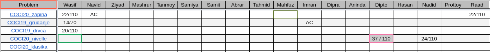
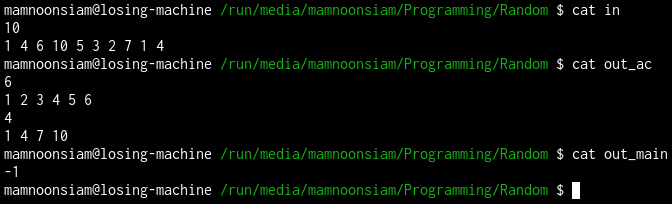

This week again trainees were assigned to solve 5 COCI problems for 4 hours. In my opinion, the problems were super educational for beginners, and there was a somewhat hard problem for those who wants a challange.

Well, problems were a bit hard for beginners' standard... clearly reflects in the ranking (sorry :3 can't do more than that for a ranklist... I'd rather put effort in teaching one more solution to a problem than to waste my time trying to set up a CMS which, by the way, I don't know how to do :)).
A - Zapina: It was a simple dp problem, just go from left to right (that is, one of the states of the dp is what positions I'm currently at), iterate over how many problems you want to assign to contestant $i$ from the remaining ones (so naturally another state would be the number of remaining problems), and then select that many problems... which tells us that we should multiply binomial coefficient. Another state is a boolean flag, which indicates if we have already one contestant that got exactly the amount of problems he wants.
$dp[i,k,f]$ means we are at $i$, have $k$ more problems to distribute, and $f=1$ means yes at least one of $[1,k)$ contestants is satisfied. $$dp[i,k,f] = \sum_{j=0}^{k} \binom{k}{j} \cdot dp[i+1,k-j,f \lor [i=j]]$$ $$dp[N+1,0,1] = 1 \\ dp[N+1,k \ne 0, f] = 0 \\ dp[N+1, k, 0] = 0$$
B - Grudanje: Binary search the answer! Let $f(g)$ be true if the string is good after time $g$. $f$ has this property that if $f(i)$ is true, then $f(i+1)$ is also true. We want to determine the first $i$ such that $f(i)$ is true. In order to determine $f(g)$ for a fixed $g$, we can use prefix 26 prefix sum arrays...
C - Drvca: Sort the heights, look at the group name of first three heights... AAA, AAB, ABA, ABB, BAA, BAB, BBA, BBB we can only have those. Each of them has at least two of the same group. Moreover, we can "say" that at least one of the groups will have their first two trees from the first three, and we will bruteforce all those $\binom{3}{2}$ pairs.
Once we fix the first two of A (wlog), difference of A, $d_A$ is fixed. Then we can uniquely determine the sequence A -- go as long as you can find first value + $k \cdot d_A$. Assign rest of $h$ to B, and check if B is a arithmetic sequence.
But this solution has a flaw... look at the following test case.
One participant failed to see this and couldn't debug because of the lack of stress testing skills. If you want to learn extensively about how to stress test, there's a video in Erricto's channel.
So in order to overcome that flaw, we will now instead try all prefixes of the found A to be the first row, and rest assigned to the second row. This can be done in $O(n^2)$.
To improve upon that, we will gradually increase the prefix size and transfer one element from B to A at a time. And to quickly determine if B is an arithmetic sequence, we will maintain a std::multiset of adjacent differences of B (when sorted). Each transfer makes $O(1)$ changes to this multiset. Also to get next/prev value in B, we will also need to store B in a multiset.
D - Nivelle: If you fix $R$, and move $L$ to the left (starting from $R$), the numerator will change at most 26 times. And for the same numerator you'll want the denominator to be maximized, that is, to minimize $L$. How do we find this changing points? Let $f_c$ be the rightmost index $\le R$, where the character $c$ occurs (or some sentinel value if it doesn't, and ignore). Sort non-sentinel $f$s in decreasing order.
E - Klasika: I'm pretty sure "Klasika" in Croatian means "classic" in English, because yes this problems is without any doubt a all time classic. Neither did I have the energy to explain everything of this problem, nor did I think the participants are prepared enough to learn these stuff. However, I took a class on binary tries and max xor problem some time ago. Here's the link of that. Other than that you need to also learn the following stuff: